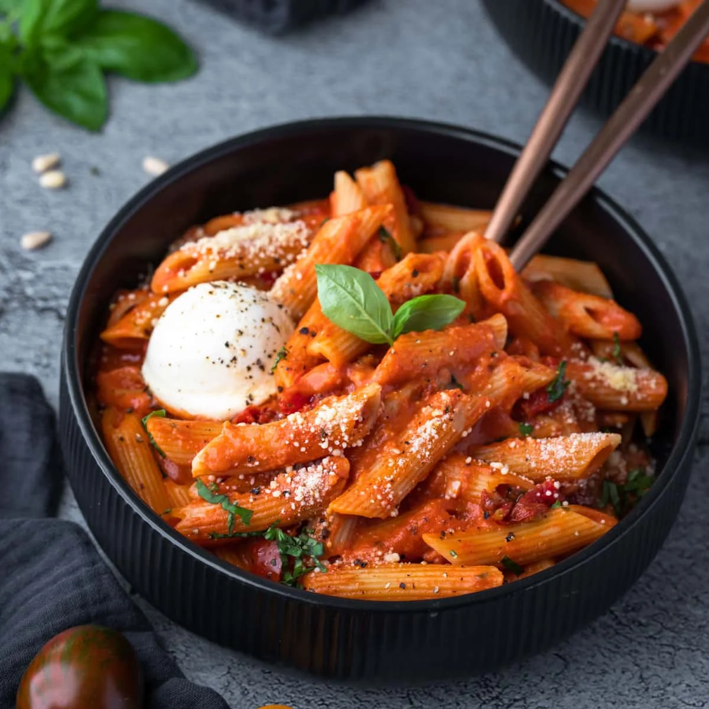

Introduction
Pasta is a versatile and comforting dish that has become a staple in many households worldwide. This classic
recipe features perfectly cooked pasta tossed in a flavorful sauce, creating a satisfying and delicious
meal that can be customized with various ingredients and seasonings.
Ingredients
- 2 cups pasta of your choice
- 2 tablespoons olive oil
- 3 cloves garlic, minced
- 1 can (14 oz) crushed tomatoes
- 1 teaspoon dried oregano
- 1 teaspoon dried basil
- 1/2 teaspoon red pepper flakes (optional)
- Salt and black pepper to taste
- Grated Parmesan cheese for serving
- Fresh basil leaves for garnish
Instructions
- Cook the pasta according to package instructions. Drain and set aside.
- In a pan, heat olive oil over medium heat. Add minced garlic and sauté until fragrant.
- Add crushed tomatoes, oregano, basil, red pepper flakes (if using), salt, and black pepper. Simmer for
about 15-20 minutes to allow the flavors to meld.
- Toss the cooked pasta in the sauce until well coated. Serve hot, topped with grated Parmesan cheese and
garnished with fresh basil leaves.